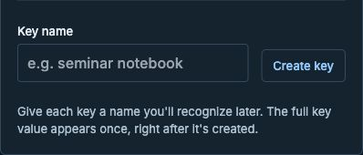

CUNY AI Lab · Vibe Coding Series
Vibe Coding I: Foundations
Tuesday, September 22, 2026 · 2:30–4:00 pm
Tuesday, September 22, 2026 · 2:30–4:00 pm
Vibe coding, language models, agents, and context
1 · HUMAN GOAL
States the desired result
2 · MODEL
Uses the available context to choose an action
3 · TOOLS
Read or edit files and run commands
4 · ENVIRONMENT
Returns output or an error
The agent is the whole system: model, context, tools, and loop.
YOUR REQUEST
The goal, constraints, and examples you provide
CONVERSATION
What has already been said
PROJECT
Files and instructions the agent has read
TOOL RESULTS
Command output, errors, tests, and other observations
Context is finite and constructed. The agent does not automatically know everything in the project or on the computer.
index.html to open it in your browser
index.html to open it in your browser
pwd
Print your current location
ls
List what's in the folder
mkdir my-project
Make a new folder
cd my-project
Move into a folder
cd ..
Go up one level
Getting Pi and CUNY AI Lab models running on your machine
The CUNY AI Lab Gateway connects Pi to the models available through the Lab. Your personal key identifies your account and applies your quota.

Create a personal key in your CUNY AI Lab Dashboard. Copy it when it appears. You cannot reveal the complete key again.
Paste the key only into Pi’s hidden prompt. Never put it in chat, GitHub, screenshots, or email.
All your personal keys share one allowance. Creating another key does not add capacity. Check your current usage in the Dashboard.
node --version and git --versionnode --version and git --versionsudo. Raise your hand
/login are normal: wait for the key promptCUNY AI Lab API key: paste your key (your typing stays hidden)pi (pi.cmd on Windows)/model and choose a CUNY AI Lab modelsudo while installing Pi on a Mac? Fix it with:sudo chown -R $(whoami) ~/.npm ~/.pi
brew install node
npm install -g @earendil-works/pi-coding-agent--doctor health check, troubleshooting, and uninstall